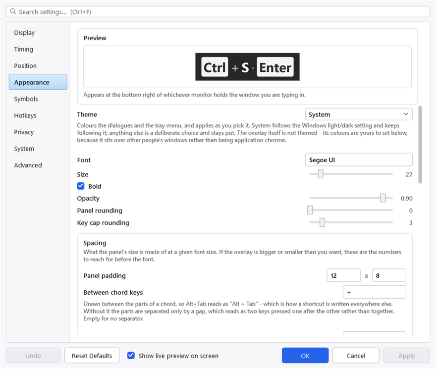
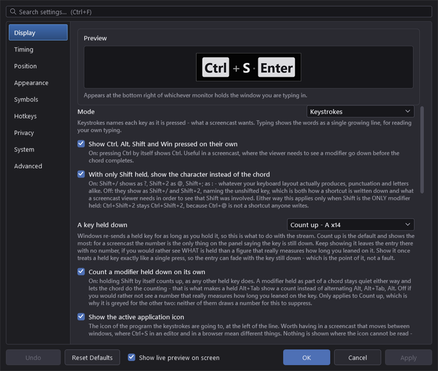
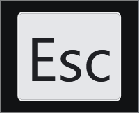

How it looks
The Appearance tab, with a live preview pinned at the top of it.
The preview is the real display control bound to a real sample, so it cannot render differently from the thing it is previewing. It stays put while the settings scroll underneath, because this is the one tab where every setting is judged by looking rather than by reading a number.
While the settings window is open, the actual overlay also holds a sample in its actual corner. The preview shows what the panel looks like; only the real one shows where it is and how big it is against your screen, which is what the position, size and opacity settings are really about. The same preview box is pinned to the top of the Display tab, because the shape settings live there — the mode, whether keys queue or stack, and the separator between them.
Show live preview on screen, at the bottom of the window beside Undo and Reset Defaults, controls that one. It is ticked when the window opens, and the sample stays on the real overlay until you untick it — through tab changes, through settings changes, and for as long as the dialogue is open.
While it is ticked, keystrokes are held: nothing you type is recorded or displayed, so the sample you are judging cannot be replaced by your own typing. That is a pause in everything but name, and deliberately not the real one — pausing draws a PAUSED marker, which would cover up the very thing you are looking at. Unticking releases it, and so does closing the window.
The line under the preview says which corner of which monitor to look at, and it is worth reading before concluding the overlay is missing. If Monitor is set to the primary screen and you are working on a second one, the panel is doing exactly as it was told, on a screen you are not facing.

The preview is pinned, so it stays visible while the rows below it scroll. It is the real display control bound to a sample rather than a picture of one, which is why it cannot drift out of step with the overlay.
Theme
Twenty-one of them: System, Light, Dark, and eighteen more — Nord, Dracula, both Solarizeds, both Catppuccins, Tokyo Night, Gruvbox, Kanagawa and the rest. They apply as you pick them.
System follows the Windows light/dark setting and keeps following it. Anything else is a deliberate choice and stays put.

The same window, dark. Every control here is templated by this application rather than inherited from Windows, which is what lets twenty-one themes work at all — an unstyled control would arrive as a white box on this background.
The theme colours the dialogues and the tray menu, not the overlay. Somebody picking "Nord" would reasonably expect the display to follow, and it deliberately does not: the overlay sits over other people's windows rather than being part of this application's chrome, so its colours are yours to set below, with their own opacity.
Font and size
Font is a family name. One that is not installed falls back rather than failing, so a typo shows up as the wrong typeface rather than as an error.
Size is the main lever on how big the display is. Bold is on by default — at a distance, weight carries further than size.
Opacity applies on top of the colours' own alpha, so a panel colour that is already translucent gets more so.
Rounding
Panel rounding and Key cap rounding are separate, and the caps are kept smaller than the panel by default so they read as sitting inside it rather than repeating its outline.
Spacing
What the panel's size is actually made of at a given font size. If the overlay is bigger or smaller than you want, these are the numbers to reach for before the font.
| Setting | What it is |
|---|---|
| Panel padding | The margin inside the panel, horizontally and vertically |
| Between chord keys | The separator drawn between the parts of a chord — + by default, empty for none |
| Gap within an entry | Between one key cap and the next inside a single chord |
| Gap between entries | Between one entry and the next along the line |
| Key cap padding | A multiplier on the space inside each cap |
| Application icon size | 1.0 matches the height of a key cap |
| Repeat count size | A fraction of the key's size; 1.0 matches it |
| Repeat count format | How the number is written — x{0} gives x3, ({0}) gives (3) |
Keep the gap within an entry smaller than the gap between entries, or a chord and a sequence of separate keystrokes look the same.

The spacing numbers turned down. Nothing here is a different setting from the defaults — same font, same colours, only the padding and the gaps.
The application icon is enlarged from whatever Windows hands over, which is usually a 256-pixel image but is sometimes only 32 — a large multiplier on one of those will look soft, and that is the source rather than the drawing.
Colours
All written as #AARRGGBB. The first pair is opacity, which is what lets the panel sit translucent over other windows. The swatch beside each one opens a colour picker; the picker sets the colour and leaves the opacity as you typed it, because the Windows picker has no alpha channel.
| Colour | What it paints |
|---|---|
| Text colour | The body text — typed characters, the repeat count |
| Panel colour | The panel behind everything |
| Panel outline | A hairline round the panel |
| Key cap fill | The face of a key cap |
| Key cap border | Its edge |
| Key cap text | The text on a cap |
| Accent | The typing caret and the paused marker |
Key cap text is a separate colour from the body text, and it has to be: a cap is a light shape on a dark panel, so its text runs the other way. A single colour for both would give either invisible cap text or invisible body text, whichever palette you picked.
A light panel. Note that the cap text has had to go the other way with it — this is the pair of colours the paragraph above is about, and changing one without the other is how the display ends up with invisible text.
The panel outline
A hairline, faint white by default, and it is there for one specific reason: over dark chrome — a terminal, a maximised editor, a full-screen video — a dark translucent panel has no visible edge at all. The keys stay legible and the shape they sit on disappears, so the display reads as loose text on the desktop and the rounded corners do nothing.
Set Outline thickness to 0, or the colour fully transparent, to remove it.
Project on SourceForge ·
Report a problem · MIT licence ·
This manual is generated from docs/manual.